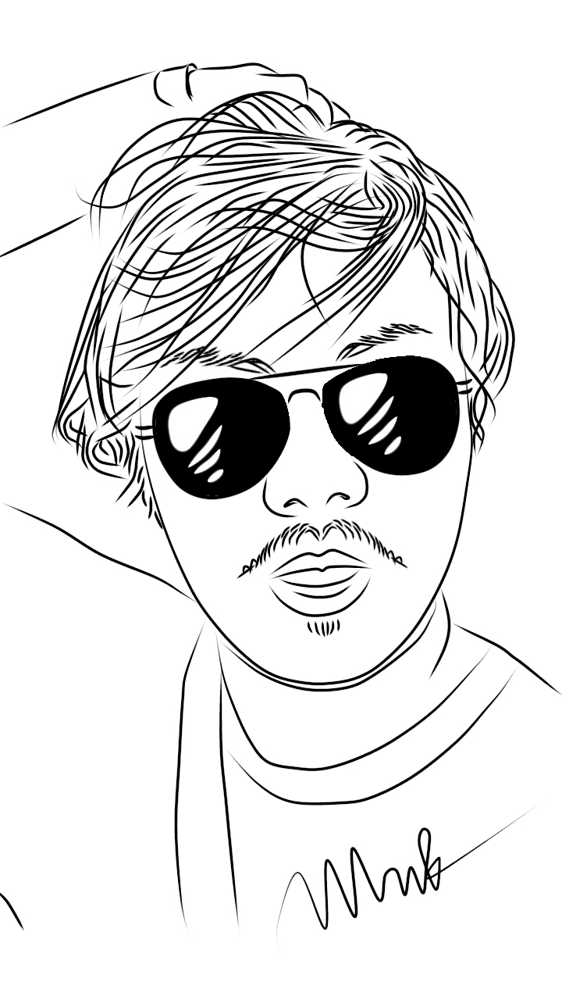
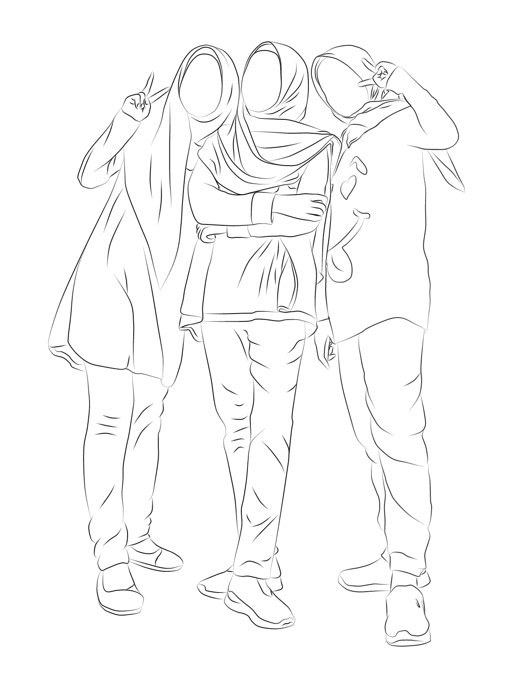
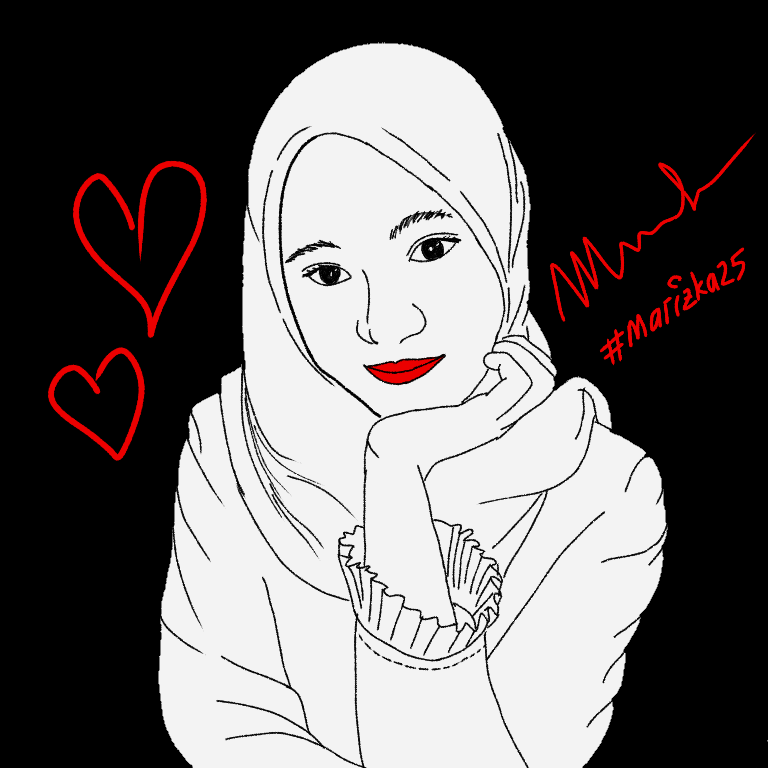
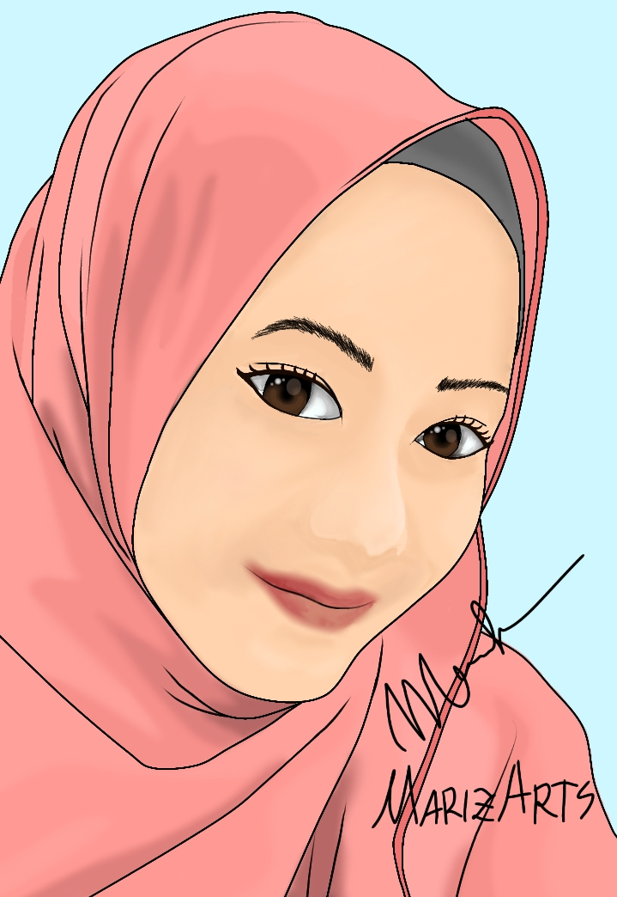
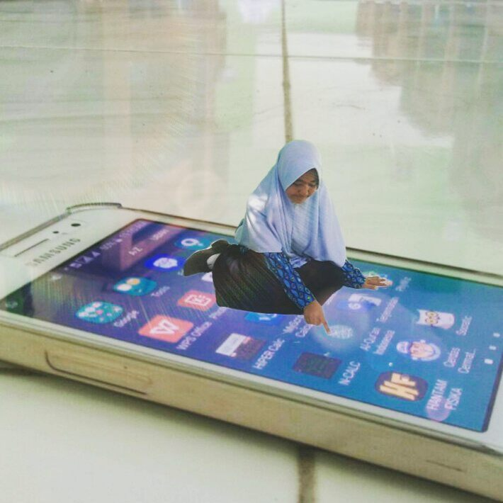
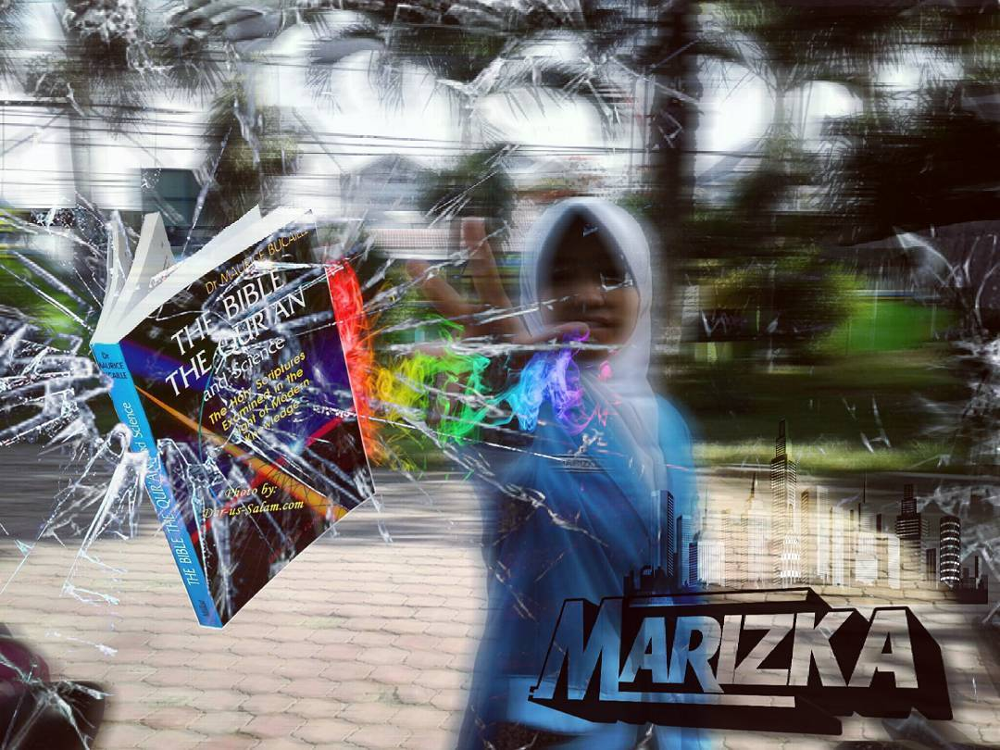
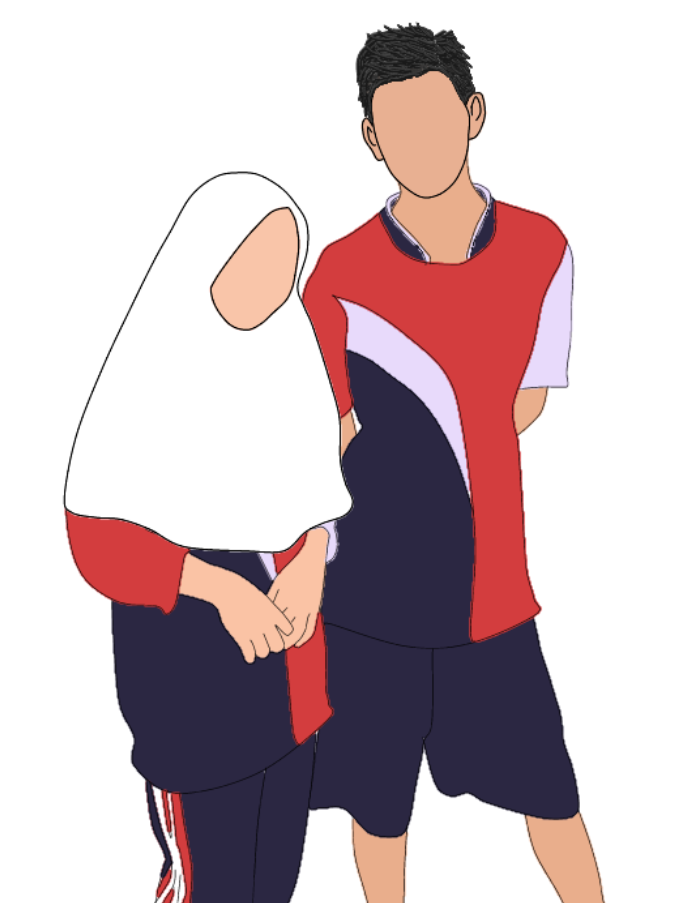

Line Art


Line art atau dalam bahasa Indonesia bisa kita sebut seni garis.
Line art merupakan bagian dari seni grafis yang menggunakan perpaduan garis untuk membuat sebuah ilustrasi.
2 gambar line art diatas saya buat pada akhir tahun 2020 lalu.

Gambar ketiga itu saya modifikasi supaya lebih berwarna dan hidup
seperti kehidupan saya setelah mengenal dia wkwkwk, canda gaes. Pemberian warna merah di antara perpadun
warna putih dan hitam menimbulkan kesan manis dan seksi.
- Line art dari foto teman saya sebut saja Mr.K.
- Line art dari foto sahabat-sahabat saya (Wowo, Saya, Yasi).
- Line art dari foto saya sendiri
Vektor Art

Vektor Art yang tentunya sudah tidak asing bagi sebagian orang.
Vektor art mirip dengan vexel art. Vector art dapat diartikan sebagai seni dan teknik yang membuat foto menjadi karakter 2D. Ini semacam kartunisasi.
Manipulation Art


Dua gambar di atas merupakan contoh gambar manipulasi. Manipulasi? Ya, 2 gambar itu tidak nyata. Yakali aku duduk di atas hp wkwkwk
Manipulation Art yaitu suatu seni atau teknik untuk mengubah, menambah atau memperindah suatu tampilan photo dari bentuk asli
menjadi suatu bentuk yang mempunyai nilai lebih. Ciri khas dari Manipulation Art yaitu biasanya gambarnya terlihat nyata,
tapi di luar akal pikiran manusia seperti dalam dunia mimpi.
Flat Design

Flat design adalah desain dengan pendekatan minimalis yang menekankan kegunaan, dengan desain yang bersih tanpa ada bevel,
bayangan, tekstur, berfokus pada tipografi, warna-warna cerah dan ilustrasi dua dimensi. Jadi, flat design itu intinya
sederhana dan gak punya kesan 3D.